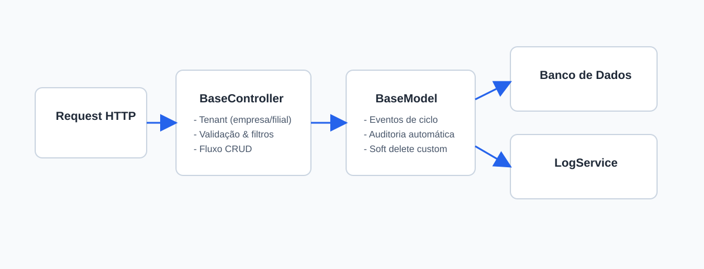
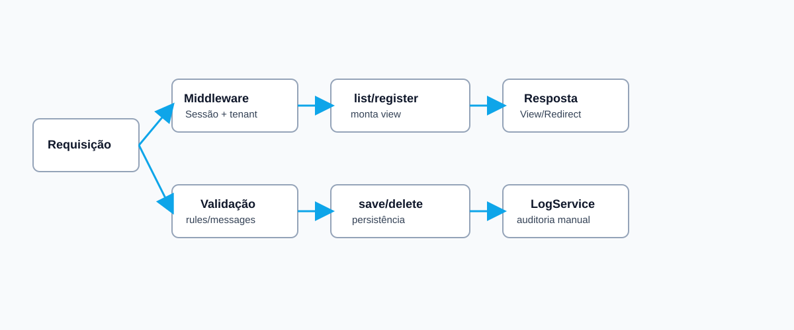
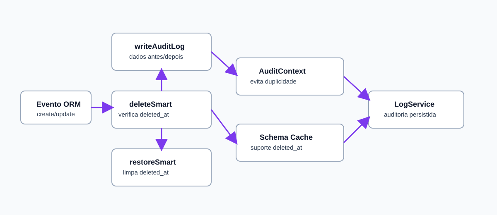

Este manual foi criado para ser uma referência prática e didática sobre os componentes
BaseController e BaseModel. O objetivo é acelerar onboarding,
padronizar implementação e reduzir erro operacional em fluxos de CRUD, multi-tenant,
auditoria e soft delete, mantendo abertura para evolução contínua do material.
Para quem é este material?
Desenvolvedores iniciantes que precisam entender a base arquitetural.
Desenvolvedores plenos/sêniores que querem padronização e ganho de escala.
Times de suporte/manutenção que precisam diagnosticar comportamento rapidamente.
O que você vai aprender
Nível básico: responsabilidades e ciclo de vida.
Nível intermediário: filtros, validações, logs e integração entre camadas.
Nível avançado: auditoria sem duplicidade, concorrência e cuidados de arquitetura.

Visão geral do fluxo entre request, controller, model, banco e auditoria.
Introdução
Em sistemas corporativos, controllers e models costumam repetir regras como:
escopo por empresa, usuário autenticado, tratamento de filial, auditoria, validação e mensagens.
Centralizar isso em classes-base reduz inconsistências e aumenta previsibilidade.
Nesta aplicação, BaseController padroniza operações web (listagem, cadastro,
edição, exclusão, restauração e filtros), enquanto BaseModel centraliza
auditoria automática e comportamento de soft delete por coluna deleted_at.
Fundamentos
Fundamento 1 — Multi-tenant por empresa
O controller base inicia contexto de tenant via empresa_id, usuario_id
e filial_id. Isso evita vazamento de dados entre empresas e garante rastreabilidade.
Fundamento 2 — Convenção explícita
O controller exige propriedades e métodos obrigatórios (como $redirectPage,
rules() e messages()). Se faltar configuração mínima, a execução falha cedo,
evitando bugs silenciosos em produção.
Fundamento 3 — Auditoria confiável
O model base registra eventos de create/update/delete/restore. O controller também registra
logs manuais em operações críticas, com mecanismos para impedir duplicidade de auditoria.
Conceitos principais
Conceito-chave: BaseController e BaseModel funcionam melhor quando você mantém
responsabilidade clara: controller orquestra fluxo HTTP e view; model representa estado,
persistência e eventos de domínio técnico (auditoria). Essa é uma base prática atual e pode receber
ajustes conforme o projeto amadurecer.
Básico
Controller base cuida da entrada, validação e resposta.
Model base cuida de persistência e eventos do ciclo de vida.
Evite lógica de negócio pesada diretamente no controller.
Intermediário
Use filtros declarativos para listagem consistente.
Aplique escopo de tenant em toda consulta sensível.
Mantenha logs com dados antes/depois para auditoria e suporte.
Avançado
Desacople integrações externas (WhatsApp, serviços) em classes utilitárias/serviços.
Evite condição de corrida em atualizações concorrentes usando validações e transações.
Padronize mensagens de erro e sucesso para facilitar observabilidade operacional.
BaseController — explicação completa
1) Responsabilidade principal
BaseController centraliza autenticação de sessão, contexto de tenant, inicialização de serviços,
CRUD genérico e comunicação com views. Com isso, controllers concretos herdam comportamento padrão
e implementam apenas o específico de cada recurso.
2) Ciclo resumido do construtor
Lê e normaliza empresa_id, usuario_id e filial_id.
Valida se usuário está autenticado na sessão.
Exige que $redirectPage esteja definido no controller filho.
Inicializa LogService para auditoria.
Compartilha configurações globais com as views.
3) Métodos de uso recorrente
list(): listagem com filtros.
register(): tela de cadastro/edição.
save() e update(): persistência com validação e log.
delete() e restore(): ciclo de exclusão/recuperação.
Ignorar normalização de filial_id e causar comportamento inconsistente.

Fluxo de listagem e persistência coordenado pelo BaseController.
BaseModel — explicação completa
1) Responsabilidade principal
BaseModel padroniza guardas de atribuição, auditoria automática por eventos e estratégia de soft delete
baseada em existência da coluna deleted_at. Isso permite compatibilidade com APIs conhecidas
e comportamento consistente entre tabelas com e sem soft delete.
2) Recursos importantes
Auditoria automática: create, update, delete e restore.
Soft delete custom: com delete(), restore() e escopos de consulta.
Cache de suporte: evita consultar schema toda hora para descobrir deleted_at.
Controle fino: possibilidade de desabilitar auditoria por instância.
Ao excluir, o model verifica suporte a deleted_at.
Com suporte, faz soft delete custom e registra auditoria.
Sem suporte, realiza delete físico e também registra auditoria.
Ao restaurar, limpa deleted_at e loga estado antes/depois.

Fluxo de eventos do BaseModel para auditoria e integridade do ciclo de vida.
Exemplos práticos (cenários reais)
Cenário 1 — CRUD completo multi-tenant (Básico)
Você precisa criar um módulo de categorias por empresa. A estratégia é herdar o BaseController,
configurar as propriedades mínimas e deixar o BaseModel cuidar da trilha de auditoria.
Cenário 2 — Filtros por data/status (Intermediário)
Para telas operacionais, declare filtros em defineFilters(). Evite construir SQL manual
repetitivo em cada controller, mantendo filtros previsíveis e padronizados.
Cenário 3 — Restauração de registros removidos (Intermediário/Avançado)
Quando o domínio permitir recuperação, mantenha a coluna deleted_at na tabela e use
restore(). Isso reduz risco de perda acidental e melhora governança de dados.
Cenário 4 — Evitando duplicidade de logs (Avançado)
Em operações coordenadas pelo controller, desabilitar a próxima auditoria automática do model evita
duas entradas para o mesmo evento. Esse padrão já resolve bem o cenário atual e pode ser refinado
conforme novas necessidades de observabilidade aparecerem.
Checklist operacional de implementação
Definir propriedades obrigatórias do controller filho.
Implementar validações mínimas e mensagens amigáveis.
Garantir presença de campos de tenant em tabelas críticas.
Padronizar uso de deleted_at quando a regra de negócio permitir recuperação.
Validar logs de create/update/delete/restore em homologação antes de produção.
Aplicações avançadas
1) Arquitetura e separação de responsabilidades
Use o BaseController como camada de orquestração HTTP e delegue regras de negócio densas para services.
O BaseModel deve manter comportamento técnico transversal (auditoria, soft delete, escopos).
2) Concorrência e consistência
Use transações em operações com múltiplas gravações correlacionadas.
Adote controle de versão/updated_at para detectar atualização concorrente.
Evite side effects no mesmo request sem estratégia de retry seguro.
3) Observabilidade
Inclua contexto mínimo no log: empresa, usuário, filial e registro.
Diferencie erros de validação de erros de integração externa.
Use mensagens consistentes para facilitar busca em logs.
4) Segurança
Nunca confiar apenas em id da requisição sem escopo por tenant.
Sanitizar entradas e aplicar validação obrigatória por recurso.
Evitar exposição de detalhes sensíveis em mensagens de erro para o usuário final.
Dúvidas comuns (FAQ)
Posso usar BaseModel em tabelas sem deleted_at?
Sim. O BaseModel detecta suporte e executa delete físico quando não houver coluna de soft delete.
Quando devo sobrescrever save/update no controller filho?
Somente quando houver fluxo específico real. Se for CRUD padrão, mantenha a implementação herdada.
Como evitar logs duplicados?
Use os mecanismos de contexto de auditoria antes de operações com log manual no controller.
Posso reaproveitar esse padrão em outros módulos?
Sim. O desenho é reutilizável e favorece escalabilidade, desde que regras de tenant sejam preservadas.
Boas práticas recomendadas
Não bypassar o escopo por empresa_id em consultas sensíveis.
Centralizar regras de validação para reduzir divergência entre endpoints.
Padronizar mensagens de sucesso/erro para experiência consistente.
Evitar lógica de integração externa diretamente no model.
Manter exemplos e documentação atualizados junto com evolução da base.
Atenção: em sistemas com alto volume de transações, valide impacto de auditoria em massa
e considere estratégias de processamento assíncrono para logs quando necessário. Se a carga crescer, vale
complementar esta seção com recomendações mais específicas de operação.
Conclusão
BaseController e BaseModel ajudam bastante na organização do projeto, na padronização das rotinas e na
redução de retrabalho, principalmente quando o sistema cresce e passa a exigir mais consistência entre
implementações.
Este manual foi pensado como apoio prático para o momento atual, não como documentação encerrada. Conforme
surgirem novos modelos, novos padrões internos e novas necessidades da aplicação, o conteúdo pode ser
ampliado com explicações mais específicas e exemplos mais próximos da realidade operacional.
Em alguns pontos já existe uma direção segura de uso; em outros, ainda há espaço para aprofundar detalhes,
ajustar cenários e incluir materiais complementares, inclusive exemplos adicionais e vídeos de apoio.
A ideia é manter esta documentação viva: útil agora e aberta para evolução contínua junto com as decisões
arquiteturais e práticas reais do time.